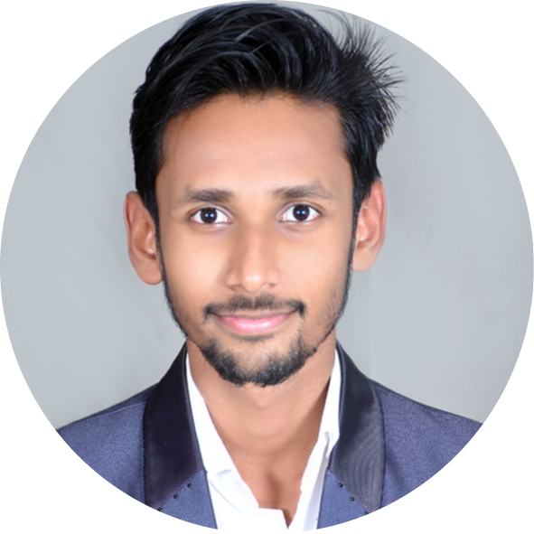

|  | Yash ZadeSoftware Engineer. To pursue a challenging career and be a part of progressive organization that gives a scope to enhance my knowledge and utilizing my skills. Seeks a nurturing environment that provides active mentorship and supports individual and collective growth. |
Bapurao Deshmukh College of Engineering, Sewagram. (SGPA = 8.18)
lt. Jijamata Sabane jr. science College Masla, Wardha. (Per = 78.69%)
Ramabai Deshmukh Public school Wardha. (CGPA = 8.87)
Elected as a Students Cordinator for Computer Department at Bapurao Deshmukh Collage Of Engineering, sewagram.
Selected as Treasurer for the First Lab, techinical lab at Bapurao Deshmukh College of Enginnering.